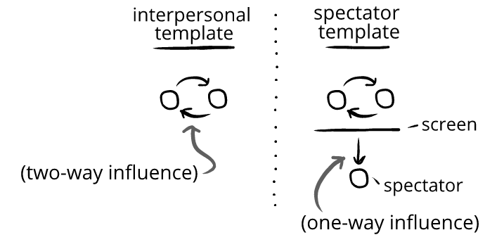

Sometimes we watch movie characters give each other insults. We laugh—but the characters are devastated:
The farmers, Wayne and Daryl, are throwing a baseball in front of a field. The hockey players, Reilly and Jonesy, drive up in a jeep blasting annoying music. Reilly and Jonesy get out with two smiling women, who leave. Reilly and Jonesy fist bump.
Reilly: (sarcastically) “Great day for hay, eh boys?”
Jonesy: (sarcastically) “Didja… ‘git ‘er done’?”
Reilly: *laughs* “Just kidding we don’t give a fuck.”
Jonesy: *exclaiming* “Dirty fucking dangles, boys!”
Reilly: “Had a sick day with your sisters, buddy. Ladies love the flow, bro.” *runs hands through hair*
Jonesy: “Circus flow, bro!” *fist bump*
Wayne: “Buddy, the only thing ladies love is when you quit talkin’.”
Reilly: (surprised) “What’d you say?”
Wayne: *tossing mitt on ground* *pointing at Reilly* “You heard me.”
Wayne and Daryl come over to stare down Reilly and Jonesy.
Wayne: “Buddy, you’re softer than a tootsie roll fruit cup.”
Daryl: “You look like the skunk my dog killed and probably raped.”
Wayne: “Get your board shorts outta here, you fucking pansy.”
Daryl: “Take your tank tops and your Tonka truck and kick rocks.”
Wayne: “Cake eater.”
Daryl: “It is a great day for hay.”
Wayne: “What’s it to ya?”
Reilly: *surprised* “Boys.”
Jonesy: “Boys.”
Wayne: “’Boys, boys,’ quit talking the same. Do you share a set of testicles and a tongue?”
Daryl: “Get real.”
Wayne: “I bet you got a handful of names for your own horn, dontcha bud.”
Daryl: “You smell like nachos and you look stoned.”
Wayne: “You write Taylor Swift lyrics in birthday cards.”
Daryl: “You prefer kittens and you kiss babies.”
Wayne: “You’re fuckin’ ten-ply bud.”
Reilly: (stunned) (impressed) *removes sunglasses* “Fellas. That was some of the finest chirping I’ve ever received.”
Jonesy: (speechless) “Ever.”
Wayne: “Oh yeah?” (sarcastically) “Did we ‘git ‘er done’?”
Daryl: “Just kidding. We don’t give a fuck.”
Wayne: “Keep away from our sisters.”
Reilly and Jonesy, chastened, turned slowly in defeat and walk away. Daryl spits.
Owen laughs. He has to watch it again to catch everything.
Owen feels humor watching the clip, but the characters in the show don't feel nearly as much humor. We can think about this by looking at "interpersonal templates" and a "spectator templates."
In an interpersonal template, people are mutually reactive to each other. But in a spectator template, there's a spectator. The spectator isn't part of this mutual reactivity. They're outside it:
The spectator template is what allows spectator entertainment to have things both ways: the characters can feel mistake-predominant emotions from insults, while the spectator can feel humor from those insults:
What generates humor in one template doesn't always work in the other. This is why we don't want to use spectator entertainment for cues about how to make someone laugh in conversation—since this can lead to errors.
For instance:
If we laugh at insults in spectator entertainment, and then tried insulting our friend—we may find they don't laugh. It's not that we can't make our friends laugh with insults—instead, we just can't take things wholesale between spectator and interpersonal templates without modification.
The clip of the farmers and hockey players was seen millions of times, with people admiring it for its caricature, delivery, pacing, scripting, and so on. One of the top comments saw the dialogue as loosely aspirational:
Commenter: “How would a person get that good at comebacks and insults? I mean I know it’s all scripted but shit. That’s superhuman levels of wit.”
The commenter answered their own question! We can’t get that good at comebacks and insults. The writers of the show aren’t that good at spontaneous comebacks and insults. They had a long production cycle and lots of crew to create an illusion of superhuman spontaneity.
Sometimes we think we’re supposed to be able to be like people in comedies. But we’re not—for the same reason we don’t think we’re supposed to be like an action heroes just because we like action movies.